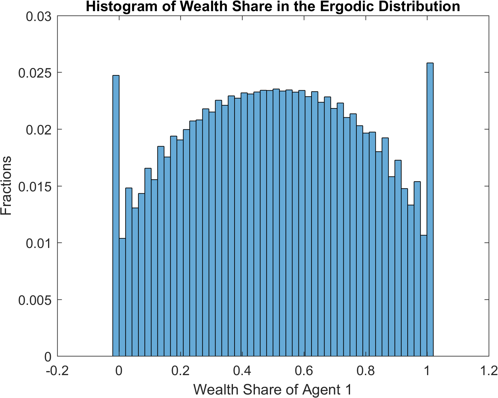

Cao (2018): Speculation and Wealth Distribution under Beliefs Heterogeneity¶
The models that we have seen so far are models with rational expectations. Our toolbox can be used to solve models without rational expectations. A recent example is Cao (2018).
The Model¶
The model in Cao (2018) is similar to the one in Heaton and Lucas (1996) with several main differences. First and foremost, the two representative agents might differ in their beliefs on the transition matrix for the exogenous Markov process. Therefore, it departs from the rational expectations assumption. Cao (2018) uses agent index \(i\in \{\text{O},\text{P}\}\), which stands for optimists or pessimists. Second, the agents are subject to a collateral constraints, besides the short-selling constraint:
where \(m\in(0,1)\) denotes the margin requirement when agents purchase stock with leverage.
We use the toolbox to solve the version of the model in Example 4 in Cao (2018) with \(m=0.1\). The constraints imply that wealth shares always lie between \(0\) and \(1\).
The following figure shows the equity premium as perceived by the optimists and the pessimists. The optimists believe that the likelihood of high dividend payment is higher than the pessimists do. Therefore, the optimists’ perceived equity premium is always higher, and they borrow from the pessimists to invest in stock.
In the ergodic distribution of wealth share in following figure using the pessimists’ beliefs as the correct beliefs, the optimists own large fractions of total wealth despite the fact that their beliefs are incorrect.
{kind=link}